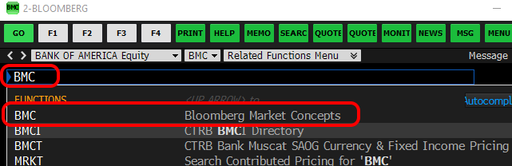
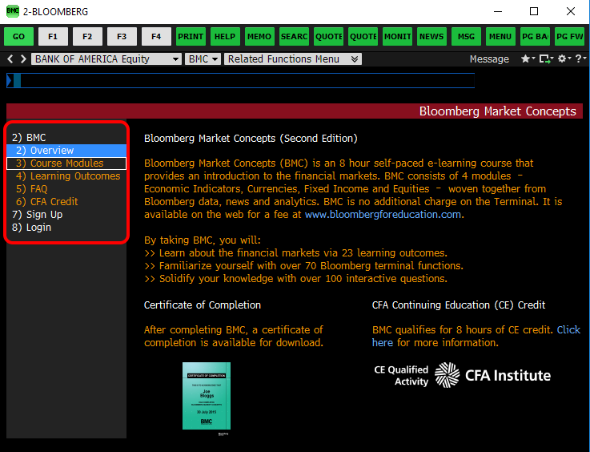

Bloomberg Market Concepts Portal
Bloomberg Market Concepts
Bloomberg Market Concepts training is available for free for RIT students when they register using their RIT email address and take the course using one of our Bloomberg Terminals located in our Business Analytics Lab. To register, simply to go https://portal.bloombergforeducation.com/register
"Bloomberg Market Concepts (BMC) is an 8 hour self-paced e-learning course that provides a visual introduction to the financial markets. BMC consists of 4 modules – Economics, Currencies, Fixed Income and Equities – woven together from Bloomberg data, news, analytics and television. By taking BMC, learners familiarize themselves with the industry standard service through four heavily interconnected modules."
Learn the language of finance
Discover the inner workings of the markets
Get Bloomberg on your resume
Accessing BMC From the Bloomberg Terminals
To access BMC from the Bloomberg Terminals in the Business Analytics Lab, start by logging into the Bloomberg Terminal Software. Once signed in, along the top, type in BMC and select BMC - Bloomberg Market Concepts from the list.
Use the menu along the left-hand side to navigate through BMC.
